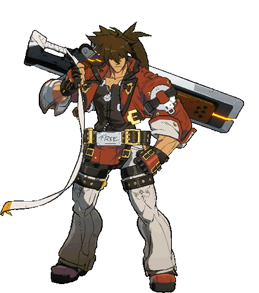
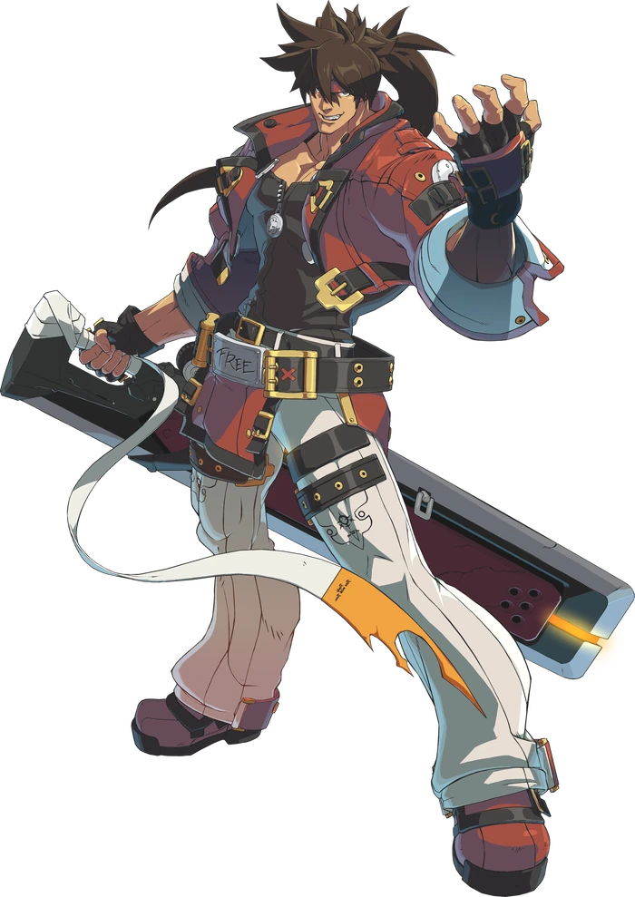

Sol Badguy

An aggressive striker who beats the opponent down with style.
A blunt and short-tempered man.
He only speaks when required, and uses as few words as he can get away with.
He's not very good at explaining things, so he prefers to express himself with his aggressive behavior and attitude.
While most see him as selfish and violent, those closest to him accept him for who he is.
